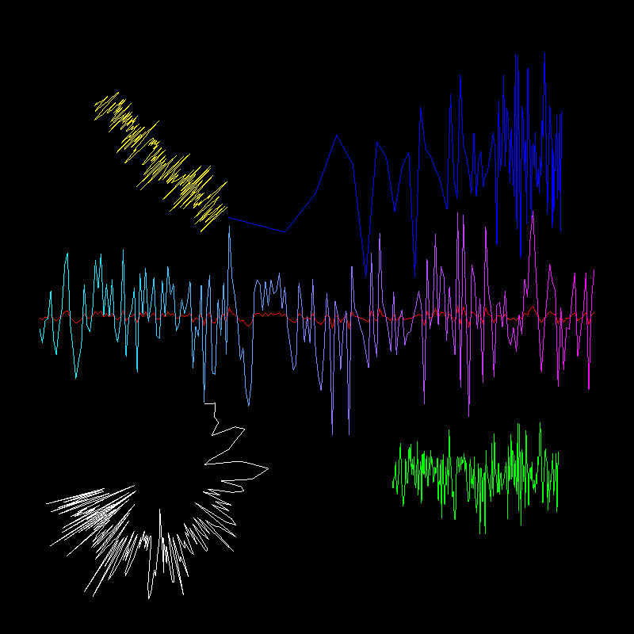

Demonstration of Line visual with arbitrary transforms.
Several Line visuals are displayed that all have the same vertex position information, but different transformations.
import numpy as np
from vispy import app, gloo, visuals
from vispy.visuals.transforms import (STTransform, LogTransform,
AffineTransform, PolarTransform)
import vispy.util
vispy.util.use_log_level('debug')
# vertex positions of data to draw
N = 200
pos = np.zeros((N, 2), dtype=np.float32)
pos[:, 0] = np.linspace(-350, 350, N)
pos[:, 1] = np.random.normal(size=N, scale=50, loc=0)
# One array of colors
color = np.ones((N, 4), dtype=np.float32)
color[:, 0] = np.linspace(0, 1, N)
color[:, 1] = color[::-1, 0]
class Canvas(app.Canvas):
def __init__(self):
# Define several Line visuals that use the same position data
# but have different colors and transformations
colors = [color, (1, 0, 0, 1), (0, 1, 0, 1), (0, 0, 1, 1),
(1, 1, 0, 1), (1, 1, 1, 1)]
self.lines = [visuals.LineVisual(pos=pos, color=colors[i])
for i in range(6)]
center = STTransform(translate=(400, 400))
self.lines[0].transform = center
self.lines[1].transform = (center *
STTransform(scale=(1, 0.1, 1)))
self.lines[2].transform = (center *
STTransform(translate=(200, 200, 0)) *
STTransform(scale=(0.3, 0.5, 1)))
self.lines[3].transform = (center *
STTransform(translate=(-200, -200, 0),
scale=(200, 1)) *
LogTransform(base=(10, 0, 0)) *
STTransform(translate=(1, 0, 0)))
self.lines[4].transform = AffineTransform()
self.lines[4].transform.rotate(45, (0, 0, 1))
self.lines[4].transform.scale((0.3, 0.3, 1))
self.lines[4].transform.translate((200, 200, 0))
self.lines[5].transform = (STTransform(translate=(200, 600, 0),
scale=(5, 5)) *
PolarTransform() *
LogTransform(base=(2, 0, 0)) *
STTransform(scale=(0.01, 0.1),
translate=(4, 20)))
app.Canvas.__init__(self, keys='interactive')
self.size = (800, 800)
self.show()
for line in self.lines:
tr_sys = visuals.transforms.TransformSystem(self)
tr_sys.visual_to_document = line.transform
line.tr_sys = tr_sys
def on_draw(self, ev):
gloo.clear('black', depth=True)
gloo.set_viewport(0, 0, *self.size)
for line in self.lines:
line.draw(line.tr_sys)
if __name__ == '__main__':
win = Canvas()
import sys
if sys.flags.interactive != 1:
app.run()